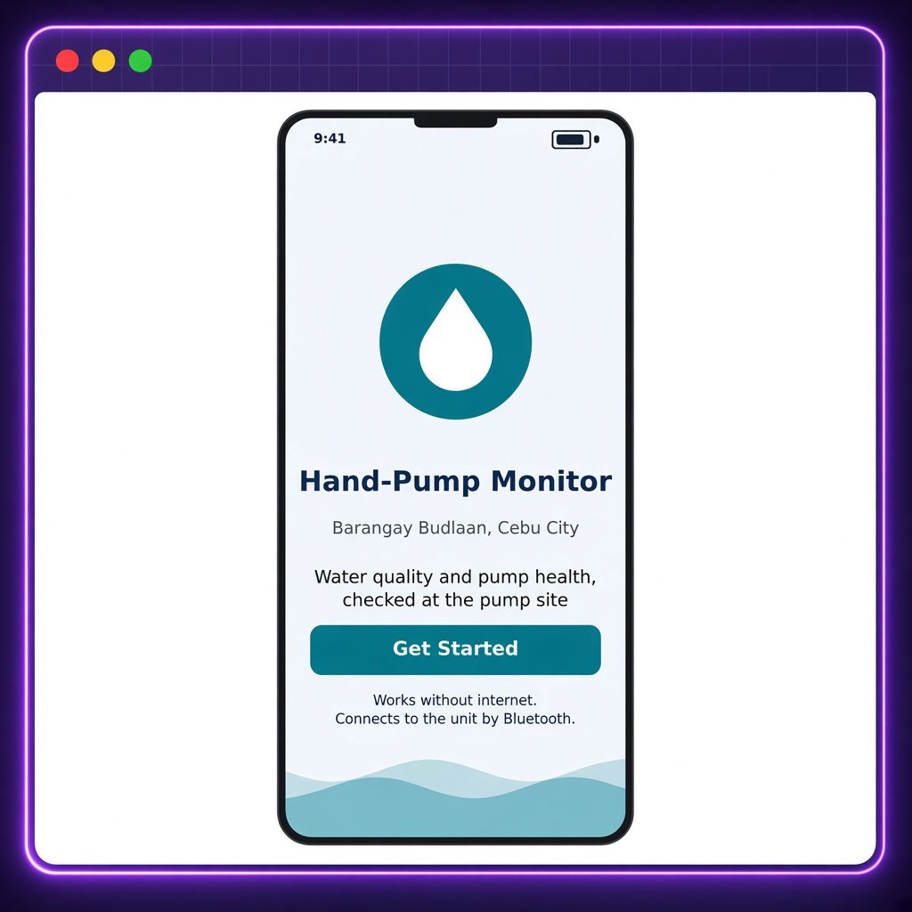
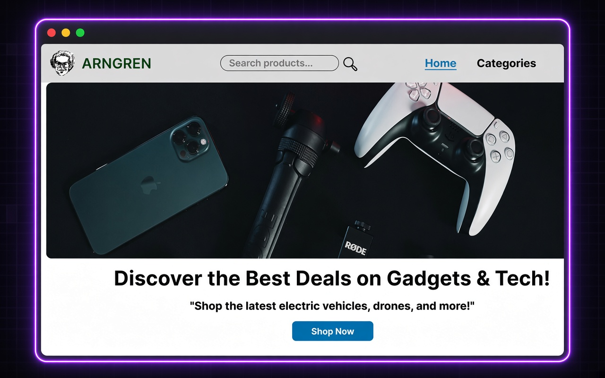
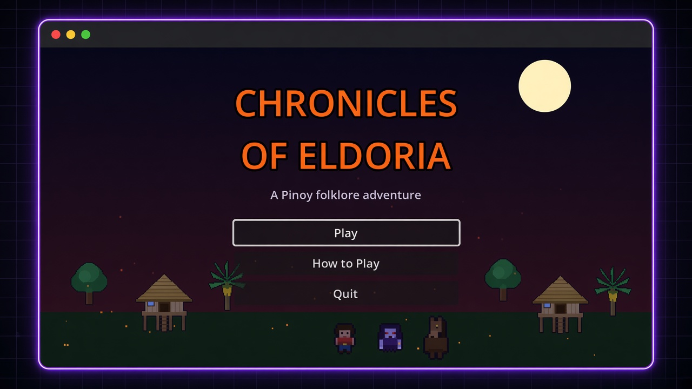

HTML & CSS
ComfortableCrafting clean and responsive web layouts.
4th Year | Information Technology | Cebu Eastern College Incorporation
I'm a student aspiring to become a Full-Stack Developer.
Transforming imagination into reality.
Technical FocusJavaScript, Python, Full-Stack Development
Passion & Purpose
Studying Information Technology at Cebu Eastern College Incorporation to pursue a career in Full-Stack Development.
I enjoy making someones imagination come to reality through code.
Technical Skills
An honest view of where I am. Levels reflect my current abilities as a student.
Crafting clean and responsive web layouts.
Immersed in practicing and applying JavaScript concepts.
Learning to write embedded code for Arduino and other microcontrollers.
Leveraging clean Python code for automation and data analysis.
Tools VS Code | GitHub | Figma | Arduino
Recent Works
Projects that showcase my skills and creativity.

Capstone | 4th Year
This IoT system monitors groundwater quality and detects early signs of hand-pump wear at community wells, then sends SMS alerts over GSM while running entirely off-grid on solar power. It solves the reactive, unmonitored management of rural hand pumps that leaves residents exposed to undetected contamination and sudden water outages.
contributionServed as the core system architect and sole technical writer for the project. I authored the entire 3-chapter manuscript, designed the complete UI/UX layout, and engineered the structural blueprint for the IoT hardware configuration.
View project
HCI | 2nd Year
To design a user-friendly interface for the Arngren website, focusing on enhancing the overall user experience and accessibility.
contribution Designed the UI/UX for the Arngren website, ensuring a seamless and accessible user experience.
View project
Game Development | 4th Year
To design and develop a fantasy-themed role-playing game with engaging storylines and immersive gameplay mechanics.
contribution Major contributor in planning and designing the game's core mechanics, storylines, and user interface.
View project